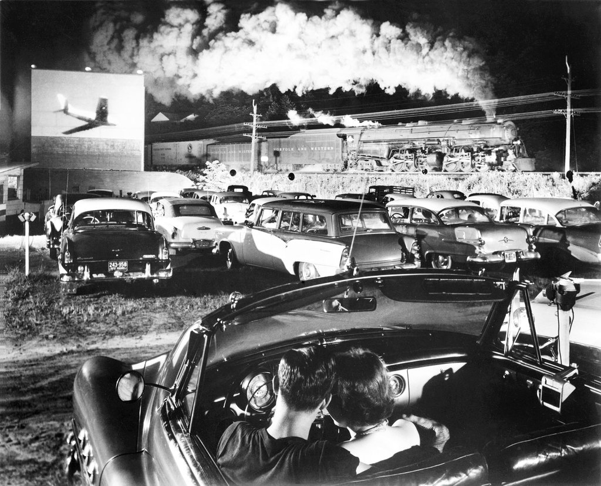
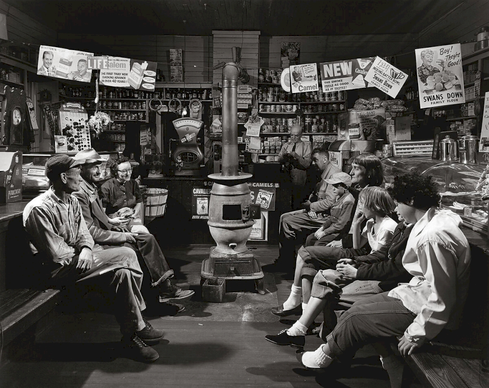
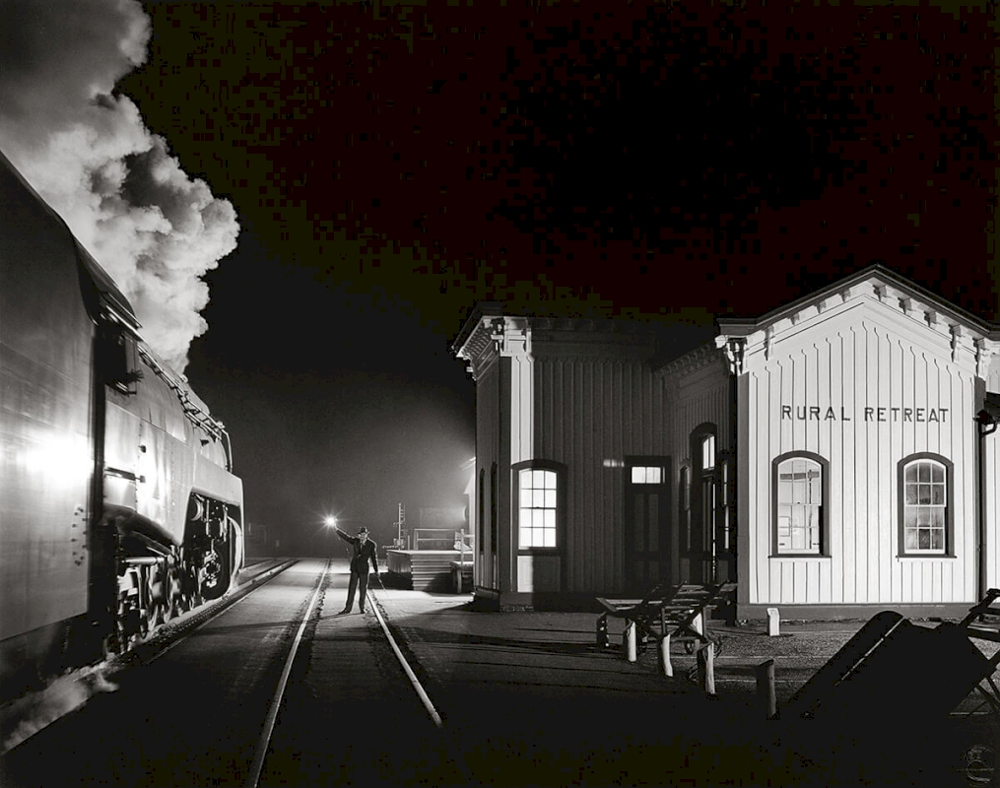

I never expected that. I didn't aim for that. All I wanted was to get some nice pictures of trains at night.

Hotshot eastbound at the iaeger drive-in, West Virginia, 1956

Abingdon Branch, waiting for the creeper in the green cove station, Virginia, 1956

Birmingham Special, Rural Retreat, V.A., December, 1957
Biography
Link was born in 1914 in Brooklyn, NY and as a teenager he developed early interests in photography, locomotives and rail yards.
Link received a civil engineering degree from the Polytechnic Institute of Brooklyn in 1937 and soon after he took a job as a photographer for a public relations firm.
Link worked for over 40 years as a commercial photographer with his most famous project being the series of the Norfolk and Western Railway.
Link was eager to photograph the end of the steam engine in such a way that the images would be a long lasting tribute to this period.